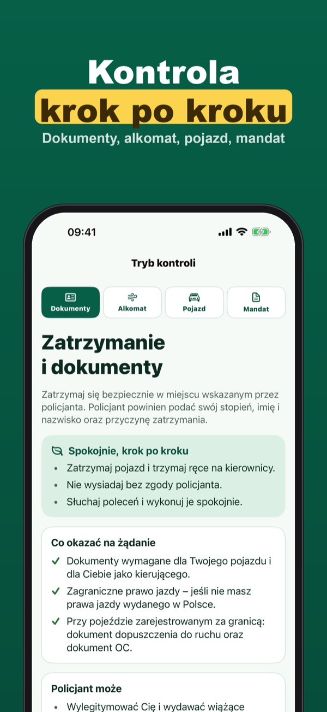
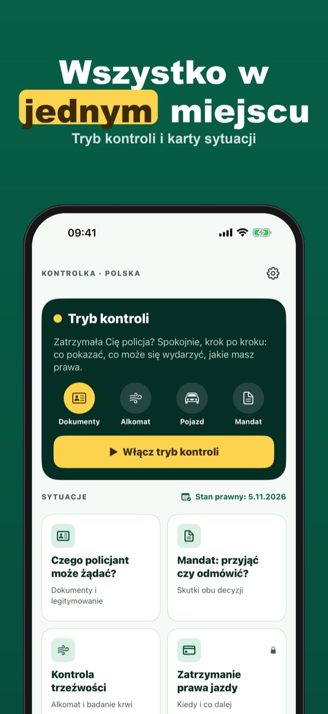
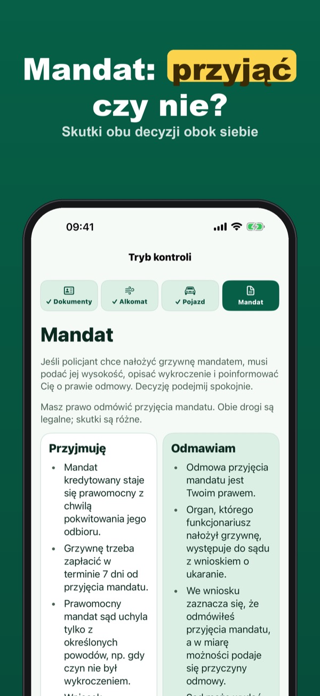

Kontrola drogowa krok po kroku
Zatrzymała Cię policja? Kontrolka spokojnie prowadzi przez kontrolę: dokumenty, alkomat, pojazd i mandat. Karty praw z artykułami i wzory pism, bez internetu.



Kontrola drogowa nie musi stresować. Kontrolka pokazuje krok po kroku, co musisz okazać, czego policjant może żądać i jakie masz prawa. Wszystko po polsku, z odwołaniem do przepisów, także bez zasięgu.
Tryb kontroli, porównanie mandatu, 10 kart sytuacji, notatki z kontroli i 3 wzory pism działają bez zakupu. Kontrolka Plus to zakup jednorazowy: wszystkie karty, wszystkie 6 wzorów pism i eksport notatki do PDF. Bez subskrypcji.
Kontrolka to informacja o przepisach napisana własnymi słowami, nie porada prawna i nie zastępuje adwokata ani radcy prawnego. Nie jest aplikacją policji ani żadnego urzędu. Podczas kontroli stosuj się do poleceń funkcjonariusza; zastrzeżenia zgłaszaj spokojnie, w protokole albo później na piśmie.
Terms of Use (EULA): https://www.apple.com/legal/internet-services/itunes/dev/stdeula/
Privacy: https://apps.baytech.nl/kontrolka-pl/